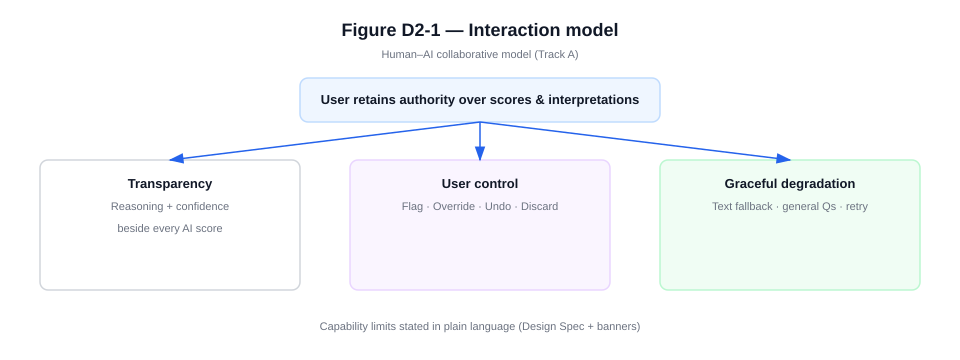
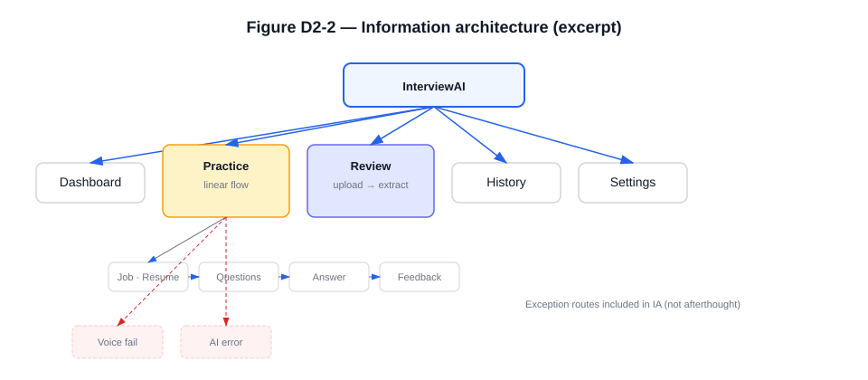
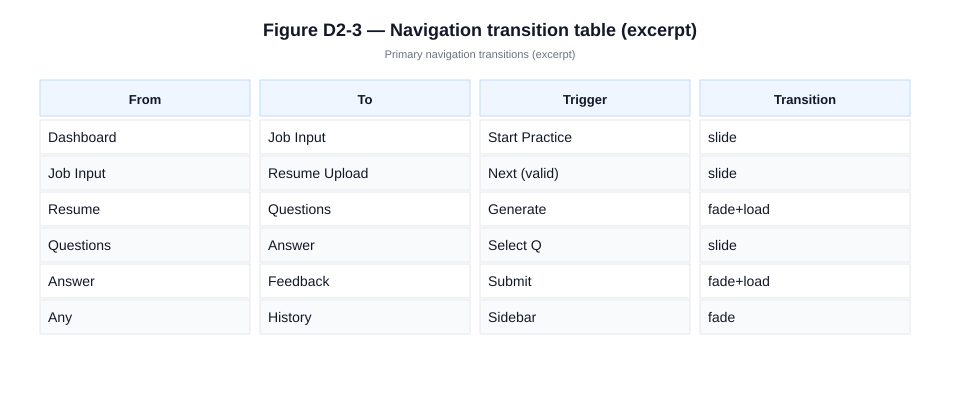
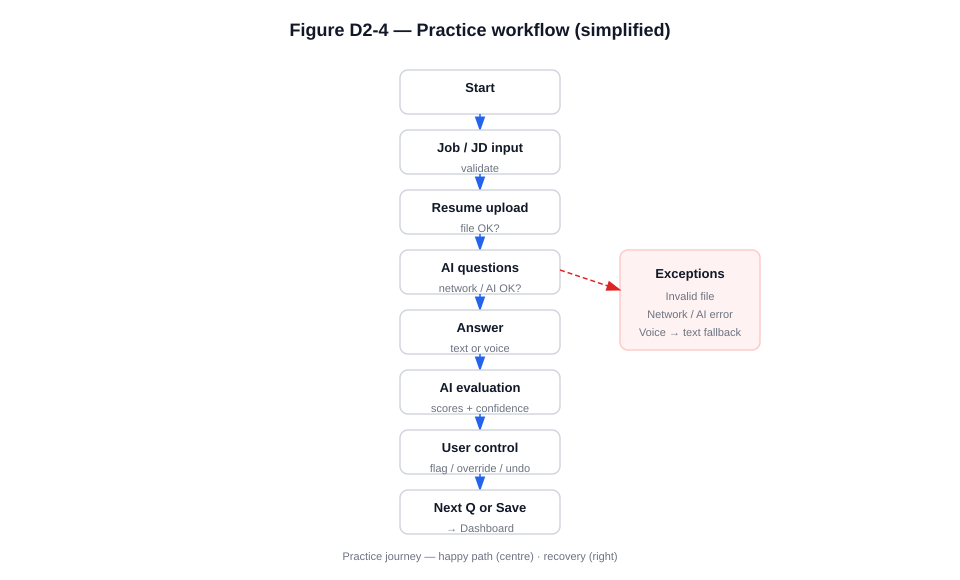
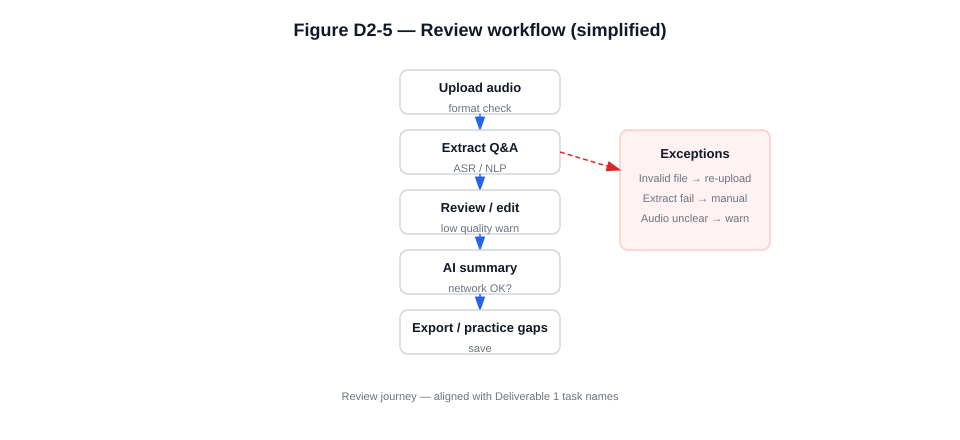
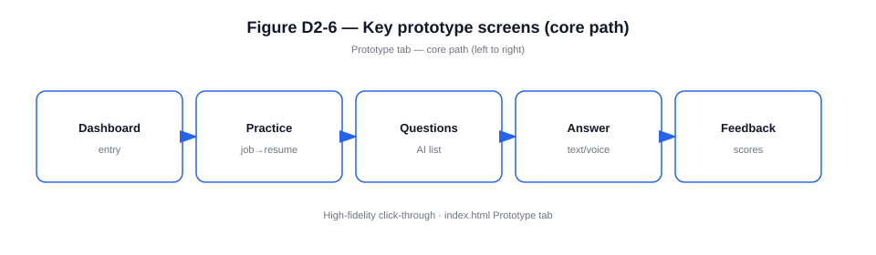
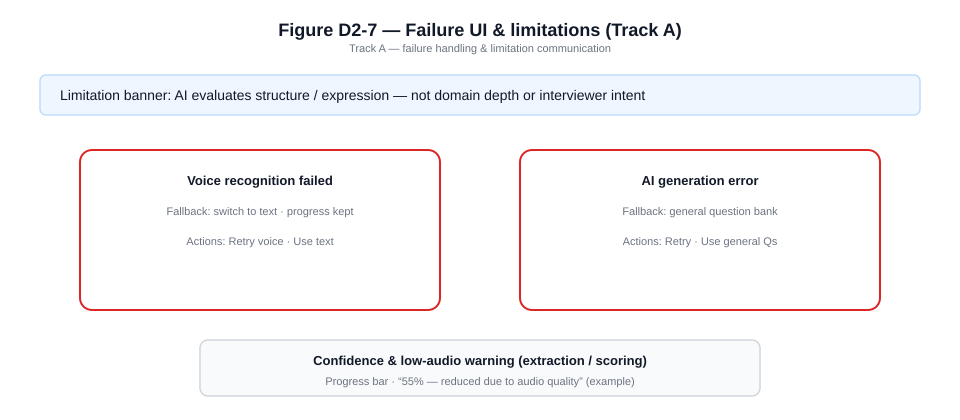

COMP7505 User Interface Design and Development — Group Project
| Product | AI Interview Copilot (InterviewAI) |
| Track | Track A — Smart Adaptive Interfaces |
| Document version | 1.0 (submission draft) |
| Prototype artefact | Single-page HTML prototype (interactive) |
This chapter responds to §II, Deliverable 2 of the COMP7505 Group Project Description: (1) Interaction Design Specification, (2) Full Workflow of Core Tasks, and (3) Interactive Prototype. The same chapter supports the grading module “Interaction Design & Prototype Quality” (§V).
Everything below is grounded in our team’s Deliverable 1 (D1). D1 established who we design for, what end-to-end tasks must succeed, and what is out of scope. We do not introduce new user goals here; we specify interaction structure, flows, and a prototype that realise those D1 commitments. Naming of journeys (Practice vs Review), emphasis on trustworthy and inspectable AI behaviour, and explicit limits on automation all follow from D1—not from generic “AI app” patterns.
The course allows functions to be simulated rather than fully implemented (§I). Our team therefore delivers a single-file HTML prototype with three tabs—Design Spec, Flow Diagrams, and Prototype—linking specification, diagrams, and a click-through demo in one place. Methodologically, we relate the information structure to card sorting and an explicit information framework (Workshop Handout Day 2).
The chapter is organised to mirror the three mandatory components of Deliverable 2, then documents Track A minimum interface requirements (§III), and closes with a consolidated list of figures. The figures throughout this chapter are schematic diagrams aligned with §2–§4; they summarise the same content as the embedded specification and flow views in the prototype.
Deliverable 1 combined pre-project user research (a short questionnaire with target users) with a primary persona, core user task definition, and project scope & boundaries. The following table states how those D1 outputs directly motivate the design choices in §2–§5.
| D1 input | User or research insight (summary) | Design response in this deliverable |
|---|---|---|
| Questionnaire & interviews | Candidates worry whether AI feedback is reliable, find feedback too generic, and feel the system does not fully use resume/JD context; many want practice that feels closer to a real interview. | We prioritise Track-aligned transparency: reasoning text and confidence next to scores; capability boundaries in plain language; user control (flag, override, undo) so users are not forced to trust a black box. |
| Persona (D1) | Fresh graduates in tech-facing roles, laptop-first preparation, iterative polishing before interviews. | Information architecture centres on Practice and Review as two primary workspaces; History supports iteration; layout assumes focused desktop use. |
| Core user task (D1) | End-to-end preparation: (A) role/JD/resume → tailored questions → answer → actionable feedback; (B) optional path using recorded interview → extraction → review → summary. | §3 flowcharts and the prototype implement A and B explicitly; labels match D1’s Practice and Review journeys so success criteria stay traceable. |
| Scope & boundaries (D1) | AI is a support tool, not the final judge; the system must signal low confidence or insufficient context; no full recruitment platform or verified company question database. | Banner and limitation copy on evaluation; degraded and fallback paths when extraction or generation fails; scope is reflected in what the UI refuses to claim (e.g. domain depth, interviewer intent). |
We selected Track A — Smart Adaptive Interfaces because D1 pain points are fundamentally about human–AI collaboration: users need adaptation (JD/resume-aware practice) without losing agency or trust. The interaction model in §2.1 is our answer to that tension—not a default template.
Corresponds to Group Project Description §II — “Interaction Design Specification: interaction model, overall information architecture, and navigation structure.”
We use a human–AI collaborative model: the system supports preparation and reflection, but the user keeps authority over interpretations and scores. D1 explicitly assumed that users retain judgment while AI assists; our model implements that assumption in the interface, not only in written scope.
Three behaviours run through the UI—each maps to a recurring theme in D1 research:
We also state capability limits in plain language (what the system can infer vs. what requires a human interviewer), so expectations stay realistic—consistent with D1’s boundary that the product must not over-claim understanding of niche depth or company-specific truth.
Figure D2-1. Design Spec tab — summary of the interaction principles (transparency, control, degradation).

Top-level areas are Dashboard, Practice, Review, History, and Settings. This split mirrors D1’s two core workflows (live practice vs. post-hoc review of a recording) plus entry (Dashboard), continuity (History), and preferences (Settings). Practice and Review contain nested steps (e.g. job context → resume → questions → answer → feedback; upload → extract → summary)—the same stages named in D1’s task narrative. Exception-related branches (voice failure, AI error, extraction failure) are included in the IA view so failures are part of the structure, not an afterthought—because D1 scoped unreliable AI or audio as realistic constraints, not edge cases we can ignore in the diagram.
Figure D2-2. Design Spec tab — information architecture (global modules, nested Practice flow, key failure routes).

Global navigation uses a persistent sidebar across modules. Multi-step flows use breadcrumbs and Next / Back where appropriate. A navigation transition table records primary page jumps: from-state, to-state, user trigger, and transition type (e.g. slide, fade), which documents operational feedback between states as required by §II.
Figure D2-3. Design Spec tab — excerpt of the navigation transition table (primary jumps).

Corresponds to Group Project Description §II — “Full Workflow of Core Tasks: end-to-end interaction flowcharts including page jumps, operational feedback, and exception branches,” aligned with Deliverable 1 core user tasks.
Deliverable 1 defines one integrated goal—prepare for a specific interview using AI support—with two concrete paths: Practice (generate and answer role-relevant questions, receive feedback) and Review (upload a recording, extract Q&A, receive a structured summary). The flowcharts in §3.2–3.3 are a direct decomposition of those paths: they add operational detail (page-level steps, system feedback, failure recovery) required by §II but not new user goals.
We keep terminology aligned with D1 so reviewers can map any screen or branch back to the D1 task description and success criteria. If the team finalises different wording in D1, flowchart labels and this section should be updated together so traceability is preserved.
The Practice flow runs from role/JD input and resume upload through AI-generated questions, text or voice answers, AI evaluation, user control actions, then next question or save/exit. The diagram includes decision nodes (validation, network, AI success, voice recognition) and exception branches (invalid file, network error, AI error, voice failure) with recovery (retry, fallback, manual input).
Figure D2-4. Flow Diagrams tab — Practice end-to-end flow (happy path + exception cluster).

The Review flow runs from audio upload through extraction and optional editing of Q&A, to feedback summary and export or follow-up. It includes branches for invalid upload, extraction failure, low audio quality, and network issues, with explicit recovery paths.
Figure D2-5. Flow Diagrams tab — Review end-to-end flow (happy path + exceptions).

Together, §3.2–3.3 satisfy §II’s requirement for page jumps, operational feedback, and exception branches. The Prototype tab implements the same branches at a demonstrable level (see §4), including modals for selected failures.
Corresponds to Group Project Description §II — “Interactive Prototype: appropriate fidelity (high-fidelity recommended; tools such as Figma, Axure, etc., are acceptable) that fully covers the entire core task workflow.”
The Prototype tab provides a high-fidelity, click-through experience: Dashboard, full Practice path, Review path, History, and Settings. Fault scenarios can be shown via controls that open voice recognition failure and AI generation error modals, matching exception nodes on the flowcharts.
The interactive prototype is submitted as one self-contained HTML file (simulated AI and error paths; no backend required). If the course asks for a public link, the team may host the same file on a static page (for example a project hosting service) and cite that URL in the portfolio.
Figure D2-6. Prototype tab — key screens along the core path (schematic strip).

Figure D2-7. Prototype tab — failure and limitation patterns (Track A: banner, two failure modals, confidence / audio-quality line).

Track-specific requirements are minimum completion criteria; failure to meet them can reduce the Track-Specific Compliance module (§V).
These requirements also reinforce D1: users who doubt AI reliability (see §1.1) need visible boundaries, recoverable failures, and honest limitation signals—which is exactly what the §III checklist demands.
| §III requirement | Where it appears in our design |
|---|---|
| Capability boundaries — what the system can and cannot do | Design Spec: Can / Cannot / Limited list; Prototype: contextual banner on evaluation views. |
| User control — override, confirmation, undo, etc. | Prototype: Feedback actions (flag, override, undo, discard); Settings: confirmations for sensitive actions. |
| ≥ Two system failure interface solutions | Prototype: modals for voice recognition failed and AI generation error (with fallbacks/retry). |
| ≥ One mechanism communicating limitations | Confidence indicators; low-confidence copy; audio quality warning on extraction. |
| §V emphasis | How this chapter addresses it |
|---|---|
| Rationality of interaction logic | Linear guided flows; explicit confirm/retry/fallback; AI outputs tied to confidence and user actions (§2–4). |
| Clarity of information architecture | Single top-level IA; nested flows; failure routes in IA (§2.2, Figure D2-2). |
| Prototype completeness | Both core journeys plus History and Settings; demonstrable failure UIs (§4). |
| Integrity of core task workflows | Flowcharts (§3) match navigable screens and modals in the prototype (§4). |
| Figure | Caption |
|---|---|
| Figure D2-1 | Interaction model: transparency, user control, graceful degradation. |
| Figure D2-2 | Information architecture and main exception paths. |
| Figure D2-3 | Navigation structure: primary transitions and triggers. |
| Figure D2-4 | Full Practice workflow with exception branches (simplified). |
| Figure D2-5 | Full Review workflow with exception branches (simplified). |
| Figure D2-6 | Key screens along the primary user journey. |
| Figure D2-7 | Track A: failure handling and limitation communication. |
This deliverable provides (1) an interaction design specification, (2) full core-task workflows with page jumps, feedback, and exception branches, and (3) a high-fidelity interactive prototype covering those workflows, as required by §II. The content is derived from Deliverable 1: persona, questionnaire insights, core user tasks, and scope jointly motivated the interaction model, IA split, dual workflows, and Track A patterns. It documents Track A minimum interface expectations (§III) and aligns with Interaction Design & Prototype Quality (§V). The prototype is also intended as the test surface for Deliverable 3 (evaluation and iteration).
COMP7505 Group Project Description (Moodle: COMP7505 → Project) — §I Core Project Brief; §II Mandatory Deliverable Components; §III Track A; §V Main Grading Criteria.
COMP7505 Workshop Handout Day 2 — Card sorting and information framework for navigation and task journeys.
Team Deliverable 1 (this project) — User research questionnaire and synthesis; primary persona / user profile; core user tasks (Practice and Review journeys); project scope & boundaries (including design assumptions and excluded services). This chapter implements those definitions rather than replacing them.
End of Deliverable 2.